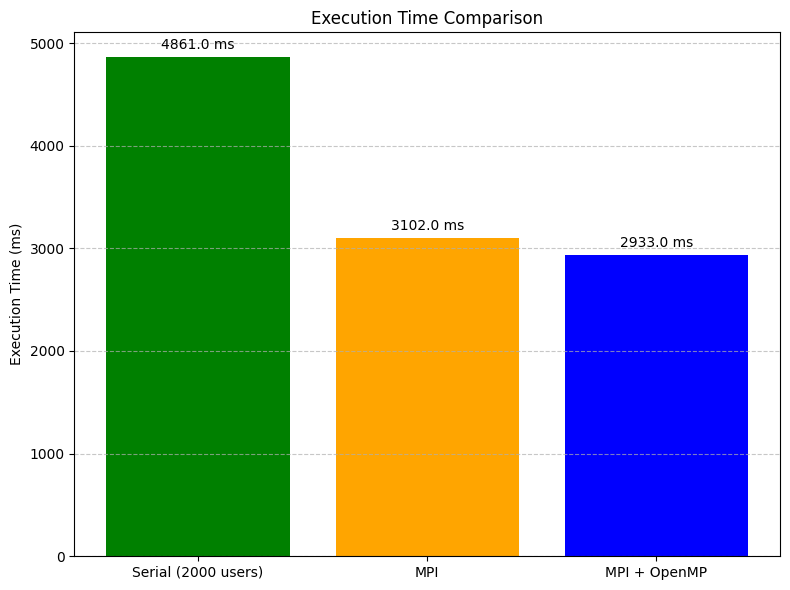

Parallel Algorithm Implementation and Demonstration
Authors: Muhammad Tahir (i220821), Sameed Ahmed Siddiqui (i228223), Tauha Imran (I221239)
1. Introduction
Overview of PSAIIM
The Parallel Socially-Aware Influence Identification Model (PSAIIM) is designed to detect influential nodes in large-scale social networks such as Twitter. It integrates PageRank and community detection in a distributed setup, leveraging social behavior graphs (retweets, replies, mentions).
Motivation for Parallelization
- Scalability: Required for large datasets (500K+ nodes).
- Performance: Reduces execution time significantly.
- Toolkit Utilization: MPI for distributed tasks, OpenMP for shared memory, METIS for partitioning.
2. Implementation Details
2.1 Parallelization Strategy
- MPI: Each process handles one graph partition and synchronizes influence values.
- OpenMP: Used for threading within MPI processes to speed up influence calculations and community detection.
- Hybrid: Combines both approaches for processor/thread optimization.
2.2 Graph Partitioning with METIS
Partitioning Type: k-way edge-cut to minimize edge crossing. Integrated into the graph loader module.
2.3 Dataset Handling
- Dataset: Higgs Twitter network (SNAP) with 500K nodes and 14M+ edges.
- Preprocessing: Used Python scripts (
generate_New_dataset.py,generate_Reduceddataset_from_Higgs.py), removed duplicates/isolated nodes, reindexed for METIS.
2.4 Technical Workflow Steps
- Load Data: Load social, retweet, reply, mention, and interest data.
- Initialize Graph: Up to 500K nodes, weighted edges, assign interest vectors.
- Detect Communities: Use DFS to find SCCs and CACs.
- Calculate Influence Power: Personalized PageRank using weights: α_retweet=0.50, α_comment=0.35, α_mention=0.15, damping=0.85.
- Select Seed Candidates: Based on influence zone I(L), threshold 0.015.
- Select Seeds: BFS trees to find top-k nodes.
- Verify & Log: Validate results, log steps to
graph_analysis.log.
2.5 Complexities
Time: O((k·m)/p + n), where k = PPR iterations, m = edges, n = nodes, p = threads
Space: O(max(n, m))
3. Experimental Setup
- Cluster of 2-3 laptops, WSL2 Ubuntu 22.04/24.04
- MPICH 4.1.1, OpenMP with GCC 11.4.0
- Compiled with:
mpic++ -fopenmp -O3 main.cpp -o psaiim - Dependencies: METIS 5.1.0, GTK, matplotlib, PyQt (GUI)
Execution Parameters
- MPI: 1 to 3 processes
- OpenMP: 4 threads/process, static scheduling, nested off
- METIS: 3-way k-cut, 500 iterations
4. Results and Analysis
Performance Metrics
- Serial (2000 nodes): 4861 ms
- OpenMP: 3102 ms (Speedup 1.57×)
- MPI + OpenMP: 2933 ms (Speedup 1.66×)
Visualizations
Total Runtime Comparison:
Serial Scalability:
MPI Initialization & Execution:

MPI + OpenMP Initialization & Execution:
Influence Power vs Followers:

Scalability Discussion
- Strong Scaling: Speed increases with more MPI processes up to overhead limits.
- Weak Scaling: Maintains performance with larger datasets and more nodes.
5. Discussion
- Challenges: Process sync, MPI latency, preprocessing, and complex research.
- Benefits of METIS: Balanced workload, minimized edge cuts.
- Trade-offs: OpenMP increases memory use but boosts speed.
- Results: Consistent accuracy, hybrid gave optimal balance.
6. Conclusion and Future Work
Best Configuration: MPI + OpenMP (hybrid)
Bonus Work:
- Multi-device cluster support
- Static HTML documentation
- GUI prototype (in progress)
Future Plans: GPU-accelerated PageRank (CUDA/OpenCL), Spark pipeline, dynamic load balancing.
7. References
- Original PSAIIM Paper
- Higgs Dataset (SNAP)
- OpenMP Docs
- MPICH
- METIS Docs
- GitHub Repo
8. Appendix
MPI Broadcast:
Run Script: